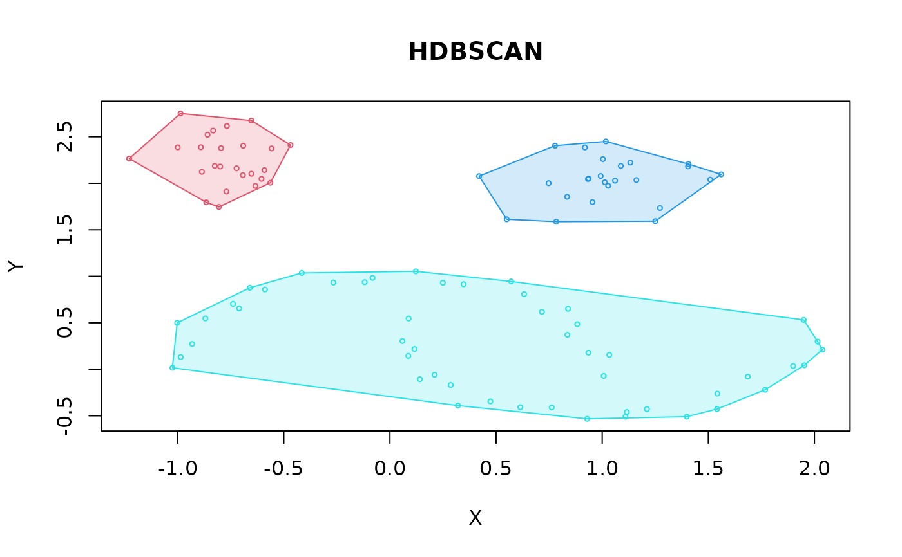

Computes the minimum spanning tree (MST) of a graph with Prim's algorithm and returns it as a single-linkage hierarchy (hclust object).
Arguments
- x
for
mst_dist()a dist object with finite distances for at least two objects. Formst_mrdist()a data matrix (or an object that can be converted to a numeric matrix) with finite values.- minPts
integer; minimum number of points used to calculate the core distances (see
coredist()). It can be omitted ifcoredistis specified. If given, it is stored in the result.- coredist
optional vector with the core distance of each point. If
NULL, then it is calculated withcoredist()(andminPtsis required).
Value
an hclust object representing the single-linkage hierarchy
of the MST. Note: the rows of the merge matrix keep
the order in which the MST was built and are not normalized to the
convention documented in hclust (singletons before clusters, singletons in
increasing index order, clusters in increasing step order).
The raw order is kept so that cluster ids stay consistent with hdbscan().
Code that relies on this convention (e.g., other packages reading $merge
directly) may fail or give unexpected results. The method component is
"robust single". dist.method is taken from the "method" attribute of
x for mst_dist() (it is omitted if x has none) and is
"mutual reachability (euclidean)" for mst_mrdist().
mst_mrdist() also stores minPts in the result (if specified).
Details
mst_dist()computes the MST of the complete graph defined by a dist object.mst_mrdist()computes the MST of the graph of mutual reachability distances (seemrdist()) directly from a data matrix andminPts. The core distances are calculated first (seecoredist()). The mutual reachability distances are computed on the fly, so no complete distance matrix is created. This saves memory (\(O(n d)\) instead of \(O(n^2)\)) and is used byhdbscan()for data matrices. The result is the same asmst_dist(mrdist(x, minPts)). Only Euclidean distances are supported.
MSTs are not unique if there are ties in the distances. Many ties are very
likely for mutual reachability distances constructed as
mrd(a, b) = max(coredist(a), coredist(b), dist(a, b)).
Ties in this implementation are broken in order of the rows in the
input data which is consistent with many other implementations.
extractFOSC() can be used to extract stable clusters from an MST.
See also
Other HDBSCAN functions:
extractFOSC(),
glosh(),
hdbscan()
Examples
data("moons")
## MST of a mutual reachability distance matrix
d <- mrdist(moons, minPts = 5)
hc_mr <- mst_dist(d)
hc_mr
#>
#> Call:
#> mst_dist(x = d)
#>
#> Cluster method : robust single
#> Distance : mutual reachability (euclidean)
#> Number of objects: 100
#>
plot(hc_mr)

## MST of the mutual reachability graph without creating the distance matrix.
hc_mr2 <- mst_mrdist(moons, minPts = 5)
## same as
all.equal(hc_mr$merge, hc_mr2$merge)
#> [1] TRUE